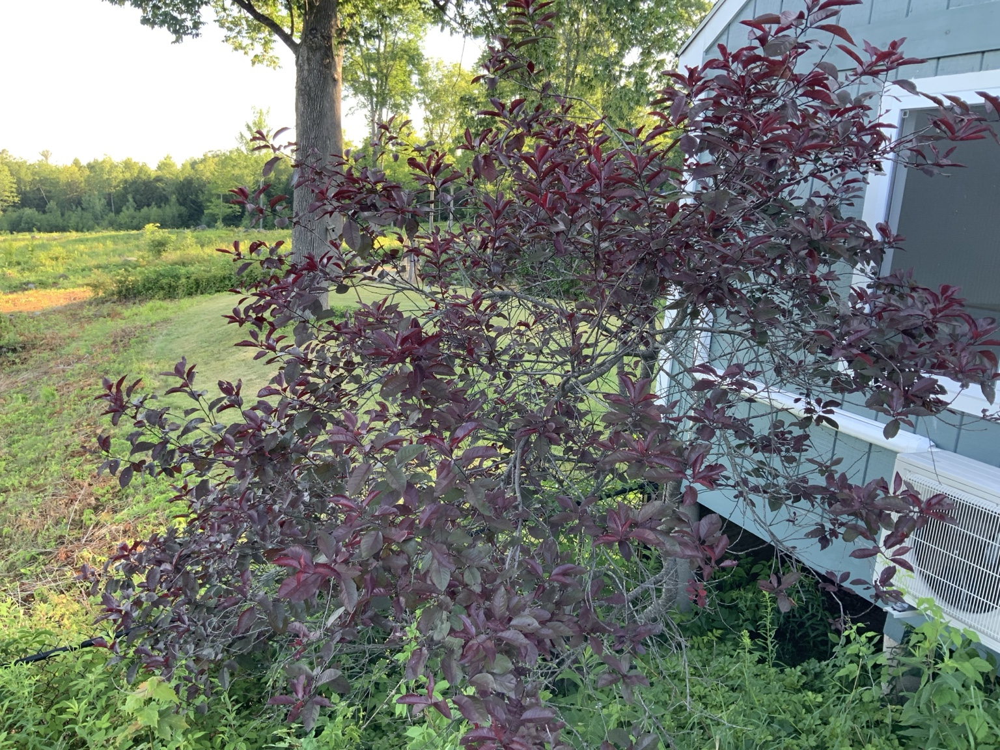
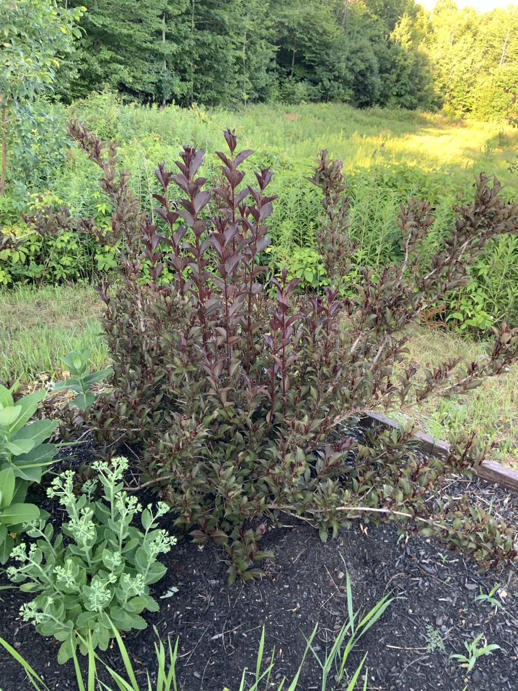

Light
Full sun for best foliage color
Prunus × cistena · Probable identification


The purple-leaved ornamental shrub growing beside the building and in the landscape bed.
Full sun for best foliage color
Regular water during establishment and drought
Well-drained soil
Light compost in spring
Prune after flowering and remove dead wood promptly.
Japanese beetles, black knot, borers